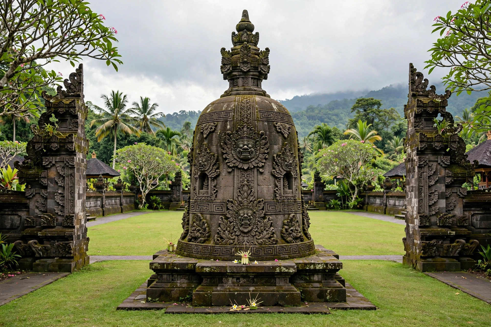

[Image placeholder: The Bajra Sandhi Monument in Denpasar]| Country | Indonesia |
|---|---|
| Island | Bali |
| Population | About 725,000 (city) |
| Status | Capital of Bali province |
**Denpasar** is the capital and largest city of the Indonesian province of Bali. A former capital of the Badung kingdom, it became Bali's administrative centre under Dutch colonial rule and remains the island's government, business and transport hub, though most visitors head to the tourist districts of Kuta, Sanur (administratively part of the city) and Ubud.
The city's central event in memory is the puputan of 1906: when Dutch troops landed to intervene, the royal court of Badung, dressed in white, marched out to die by their own krises and Dutch bullets rather than surrender — a ritual mass suicide that shocked the Netherlands and ended Balinese royal rule. A monument in Puputan Square commemorates it.
The Bali Museum (1932) preserves Balinese art and artefacts; the Bajra Sandhi Monument in Renon recounts Balinese history in dioramas. Denpasar's markets (Pasar Badung), Chinese-Indonesian shophouses and temples such as Jagatnatha reflect the city's mix of Balinese Hindu tradition and commerce.
Denpasar hosts most of Bali's universities and hospitals and its provincial government; nearby Ngurah Rai International Airport serves the island. Traffic congestion and waste are chronic issues as the metropolitan area grows toward a million-plus residents.